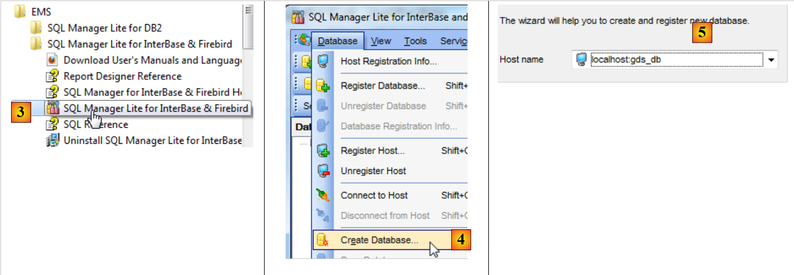
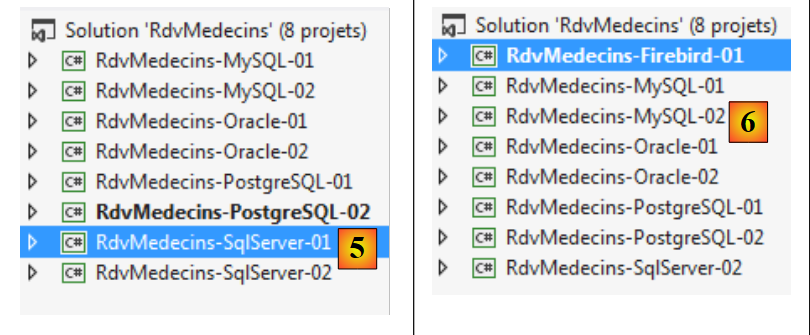
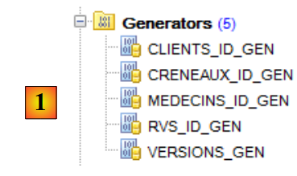
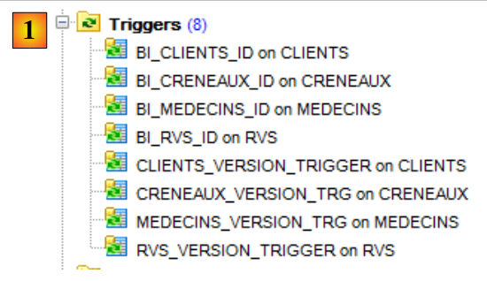
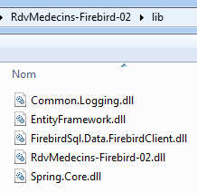

7. Case study with Firebird 2.1
7.1. Installing the tools
The tools to install are as follows:
- the DBMS: [http://www.firebirdsql.org/en/firebird-2-1-5/];
- an administration tool: EMS SQL Manager for InterBase/Firebird Freeware [http://www.sqlmanager.net/fr/products/ibfb/manager/download].
In the following examples, the user is sysdba with the password masterkey.
Let’s launch Firebird and then the [SQL Manager Lite for Firebird] tool, which we will use to administer the DBMS.
 |
- In [1], we launch the Firebird DBMS from the Start Menu. Here, the DBMS has not been installed as a Windows service;
- in [2], the service is started. An icon appears in the bottom-right corner of the screen. Right-clicking on it allows you to stop the DBMS.
We now launch the [SQL Manager Lite for Firebird] tool, which we will use to administer the DBMS [3].
 |
- In [4], we create a new database;
- In [5], we confirm;
 |
- In [5], we log in as SYSDBA / masterkey;
- In [6], specify the location of the file to be created. The database will be created as a single file;
- In [7], we validate the SQL statement to be executed;
 |
- In [8], the database has been created. It must now be registered in [EMS Manager]. The information is correct. Click [OK];
- In [9], log in to it;
- In [10], [EMS Manager] displays the database, which is currently empty.
We will now connect a VS 2012 project to this database.
7.2. Creating the database from the entities
We start by duplicating the [RdvMedecins-SqlServer-01] project folder into [RdvMedecins-Firebird-01] [1]:
 |
- in [2], in VS 2012, we remove the [RdvMedecins-SqlServer-01] project from the solution;
 |
- in [3], the project has been removed;
- in [4], we add another one. This one is taken from the [RdvMedecins-Firebird-01] folder that we created earlier;
 |
- In [5], the loaded project is named [RdvMedecins-SqlServer-01];
- In [6], we change its name to [RdvMedecins-Firebird-01]
 |
- in [7], we add another project to the solution. This project is taken from the [RdvMedecins-SqlServer-01] folder of the project we previously removed from the solution;
- in [8], the [RdvMedecins-SqlServer-01] project has been re-added to the solution.
The [RdvMedecins-Firebird-01] project is identical to the [RdvMedecins-SqlServer-01] project. We need to make a few changes. In [App.config], we will modify the connection string and the [DbProviderFactory], which must be adapted for each DBMS.
<!-- database connection string -->
<connectionStrings>
<add name="myContext" connectionString="User=SYSDBA;Password=masterkey;Database=D:\data\istia-1213\c#\dvp\Entity Framework\databases\firebird\RDVMEDECINS-EF.GDB;DataSource=localhost;
Port=3050;Dialect=3;Charset=NONE;Role=;Connection lifetime=15;Pooling=true;MinPoolSize=0;MaxPoolSize=50;Packet Size=8192;ServerType=0;" providerName="FirebirdSql.Data.FirebirdClient" />
</connectionStrings>
<!-- the factory provider -->
<system.data>
<DbProviderFactories>
<add name="Firebird Client Data Provider" invariant="FirebirdSql.Data.FirebirdClient" description=".NET Framework Data Provider for Firebird" type="FirebirdSql.Data.FirebirdClient.FirebirdClientFactory, FirebirdSql.Data.FirebirdClient, Version=2.7.7.0, Culture=neutral, PublicKeyToken=3750abcc3150b00c" />
</DbProviderFactories>
</system.data>
- line 3: the username and password, as well as the full path to the Firebird database;
- Lines 8–10: the DbProviderFactory. Line 9 references a DLL [FirebirdSql.Data.FirebirdClient] that we do not have. We can obtain it using NuGet [1]:
 |
- in [2], type the keyword "firebird" in the search box;
- in [3], select the package [Firebird ADO.NET Data Provider]. This is an ADO.NET connector for Firebird;
 |
- in [4], the new reference;
- in [5], in [App.config], you must specify the correct version of the DLL. You can find it in its properties.
In the [Entities.cs] file, you need to adapt the schema of the tables that will be generated:
[Table("DOCTORS")]
public class Doctor : Person
{...}
[Table("CLIENTS")]
public class Client : Person
{...}
[Table("SLOTS")]
public class Slot
{...}
[Table("RVS")]
public class Rv
{...}
Here, the tables have no schema.
We configure the project's execution:
 |
- in [1], we give a different name to the assembly that will be generated;
- in [2], we also specify a different default namespace;
- in [3], we specify the program to be executed.
At this stage, there are no compilation errors. Let’s run the [CreateDB_01] program. We get the following exception:
We recall having encountered the same error with MySQL, Oracle, and PostgreSQL. This is related to the type of the Timestamp field in the entities. We make the same modification as with the two previous DBMSs. In the entities, we replace the three lines
[Column("TIMESTAMP")]
[Timestamp]
public byte[] Timestamp { get; set; }
with the following:
[ConcurrencyCheck]
[Column("VERSIONING")]
public int? Versioning { get; set; }
We therefore change the column type from byte[] to int?. In the DBMS, we will use stored procedures to increment this integer by one each time a row is inserted or modified.
We make the above change for all four entities and then rerun the application. We then get the following error:
Line 1 indicates that the database is in use. I don’t think that was the case, and I wasn’t able to resolve this issue.
Never mind. We will build the [RDVMEDECINS-EF] database manually using the [EMS Manager for Firebird] tool. We will not describe every step, but only the most important ones.
The Firebird database will be as follows:
The tables
 |
- In [1],
IDis a primary key with the</span>*Autoincrement* attribute. It will be generated automatically by the DBMS;
 |
 |
 |
The various tables have the same primary and foreign keys as those in the previous examples. The foreign keys have the ON DELETE CASCADE attribute.
The Generators
As with Oracle and PostgreSQL, we have created sequential number generators. There are 5 of them [1].
 |
- [CLIENTS_ID_GEN] will be used to generate the primary key for the [CLIENTS] table;
- [MEDECINS_ID_GEN] will be used to generate the primary key for the [MEDECINS] table;
- [CRENEAUX_ID_GEN] will be used to generate the primary key for the [CRENEAUX] table;
- [RVS_ID_GEN] will be used to generate the primary key for the [RVS] table;
- [VERSIONS_GEN] will be used to generate the values for the [VERSIONING] columns in all tables.
Triggers
A trigger is a procedure executed by the DBMS before or after an event (Insert, Update, Delete) in a table. We have 8 of them [1]:
 |
Let’s look at the DDL code for the [BI_CLIENTS_ID] trigger, which populates the [ID] column of the [CLIENTS] table:
- Line 2: Before each insertion into the [CLIENTS] table;
- lines 6-7: if the ID column is NULL, then assign it the next value from the [CLIENTS_ID_GEN] number generator.
The triggers [BI_CLIENTS_ID, BI_MEDECINS_ID, BI_CRENEAUX_ID, BI_RVS_ID] are all constructed in the same way.
Let’s now look at the DDL code for the [CLIENTS_VERSION_TRIGGER] trigger, which populates the [VERSIONING] column of the [CLIENTS] table:
- Lines 1–3: Before each INSERT or UPDATE operation on the [CLIENTS] table;
- line 6: the ["VERSIONING"] column receives the next value from the number generator [VERSIONS_GEN]. This generator populates the ["VERSIONING"] columns of the four tables.
The triggers [MEDECINS_VERSION_TRIGGER, CRENEAUX_VERSION_TRIGGER, RVS_VERSION_TRIGGER] are similar.
The script for generating the tables in the Firebird database [RDVMEDECINS-EF] has been placed in the folder [RdvMedecins / databases / Firebird]. The reader can load and run it to create the tables.
Once this is done, the various programs in the project can be run. They produce the same results as with SQL Server, except for the [ModifyDetachedEntities] program, which crashes for the same reason it crashed with Oracle and MySQL. The problem is resolved in the same way. Simply copy the [ModifyDetachedEntities] program from the [RdvMedecins-Oracle-01] project into the [RdvMedecins-Firebird-01] project.
7.3. Multi-layer architecture based on EF 5
We return to our case study described in paragraph 2.
 |
We will start by building the [DAO] data access layer. To do this, we duplicate the VS 2012 console project [RdvMedecins-SqlServer-02] into [RdvMedecins-Firebird-02] [1]:
 |
- in [2], we delete the [RdvMedecins-SqlServer-02] project;
 |
- in [3], we add an existing project to the solution. We take it from the [RdvMedecins-Firebird-02] folder that was just created;
- in [4], the new project has the same name as the one that was deleted. We will change its name;
 |
- In [5], we have changed the project name;
- In [6], we modify some of its properties, such as the assembly name here;
- in [7], the [Models] folder is deleted and replaced by the [Models] folder from the [RdvMedecins-Firebird-01] project. This is because both projects share the same models.
 |
- in [8], the project's current references;
- In [9], the Firebird ADO.NET connector has been added using the NuGet tool.
In the [App.config] file, replace the SQL Server database information with that of the Firebird database. This information can be found in the [App.config] file of the [RdvMedecins-Firebird-01] project:
<!-- database connection string -->
<connectionStrings>
<add name="myContext" connectionString="User=SYSDBA;Password=masterkey;Database=D:\data\istia-1213\c#\dvp\Entity Framework\databases\firebird\RDVMEDECINS-EF.GDB;DataSource=localhost;
Port=3050;Dialect=3;Charset=NONE;Role=;Connection lifetime=15;Pooling=true;MinPoolSize=0;MaxPoolSize=50;Packet Size=8192;ServerType=0;" providerName="FirebirdSql.Data.FirebirdClient" />
</connectionStrings>
<!-- the provider factory -->
<system.data>
<DbProviderFactories>
<add name="Firebird Client Data Provider" invariant="FirebirdSql.Data.FirebirdClient" description=".NET Framework Data Provider for Firebird" type="FirebirdSql.Data.FirebirdClient.FirebirdClientFactory, FirebirdSql.Data.FirebirdClient, Version=2.7.7.0, Culture=neutral, PublicKeyToken=3750abcc3150b00c" />
</DbProviderFactories>
</system.data>
The objects managed by Spring also change. Currently we have:
<!-- Spring configuration -->
<spring>
<context>
<resource uri="config://spring/objects" />
</context>
<objects xmlns="http://www.springframework.net">
<object id="rdvmedecinsDao" type="RdvMedecins.Dao.Dao,RdvMedecins-SqlServer-02" />
</objects>
</spring>
Line 7 references the assembly for the [RdvMedecins-SqlServer-02] project. The assembly is now [RdvMedecins-Firebird-02].
With that done, we are ready to run the [DAO] layer test. First, we must ensure the database is populated (using the [Fill] program from the [RdvMedecins-Firebird-01] project). The test program passes.
We create the project’s DLL as we did for the [RdvMedecins-SqlServer-02] project and gather all the project’s DLLs into a [lib] folder created in [RdvMedecins-Firebird-02]. These will be the references for the [RdvMedecins-Firebird-03] web project that follows.
 |
We are now ready to build the [ASP.NET] layer of our application:
 |
We will start with the [RdvMedecins-SqlServer-03] project. We will duplicate this project folder into [RdvMedecins-Firebird-03] [1]:
 |
- in [2], using VS 2012 Express for the Web, we open the solution in the [RdvMedecins-Firebird-03] folder;
- in [3], we change both the solution name and the project name;
 |
- in [4], the project's current references;
- in [5], we delete them;
- in [6], to replace them with references to the DLLs we just stored in a [lib] folder within the [RdvMedecins-Firebird-02] project.
All that remains is to modify the [Web.config] file. We replace its current content with the content of the [App.config] file from the [RdvMedecins-Firebird-02] project. Once this is done, we run the web project. It works. Don’t forget to populate the database before running the web application.